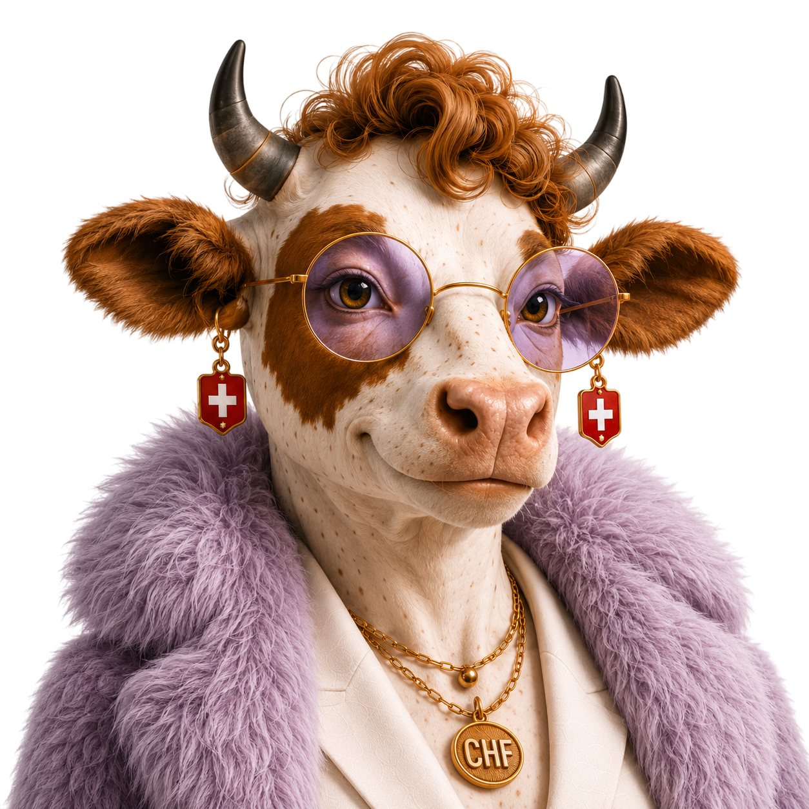

Frau Stutz
Stutz на диалекте — франк. И деньги вообще. «Die hät Stutz» = «у неё есть деньги».
- StatusC 2009, паспорт 2016
- HerkunftПриехала сюда никем
- WohnortВилла 1911, купила сама
- Säulen1 · 2 · 3a
- VermögenСвоё. Заработала
Муж швейцарец, и это не помогло почти ни в чём. Он вырос внутри системы и не может объяснить то, чего никогда не выбирал: какую Krankenkasse брать, как считается Eigenmietwert, почему её диплом здесь не считается дипломом.
Она разбиралась сама. …дцать лет. Знает, чем AG отличается от GmbH, почему Steuerfuss в соседней Gemeinde другой и что будет с её деньгами при разводе. Особенно последнее.
Не выпендривается. Не носит логотипы. Не говорит «инвестируй в себя». Говорит цифрами и никогда не повышает голос.
И знает главное: чем больше людей и знаний вокруг — тем больше возможностей. Мастерица витамина B: здесь он решает больше, чем резюме. Теперь она и сама для кого-то этот витамин.
→ Интеграцию за тебя муж не пройдёт.
Успешная интеграция — дело воли, желания и усилий самого интегрирующегося.